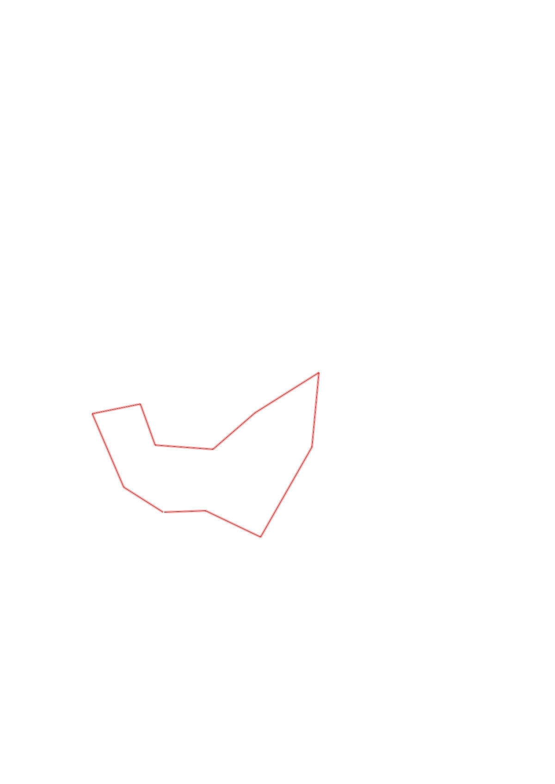
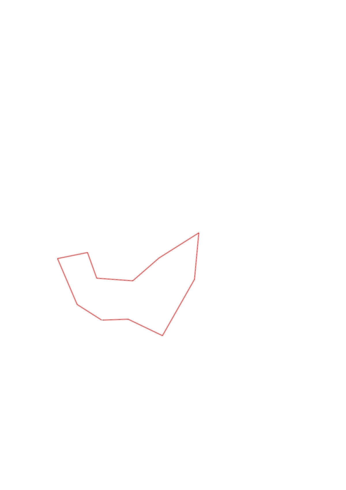

| Control |
Points |
Time Punched |
Distance |
Your Time |
Pace |
Place |
Fastest Time |
Median Time |
% Behind Fastest |
| 35 |
30 |
|
0.27 |
0:03:34 |
13:12 |
17 / 17 |
0:01:07 |
0:01:37 |
219% |
| 72 |
70 |
|
0.46 |
0:05:18 |
11:31 |
1 / 3 |
0:05:18 |
0:07:42 |
0% |
| 58 |
50 |
|
0.28 |
0:03:32 |
12:37 |
3 / 6 |
0:02:22 |
0:03:34 |
49% |
| 51 |
50 |
|
0.25 |
0:03:16 |
13:04 |
6 / 9 |
0:01:43 |
0:02:53 |
90% |
| 41 |
40 |
|
0.33 |
0:04:05 |
12:22 |
1 / 1 |
0:04:05 |
0:04:05 |
0% |
| 91 |
90 |
|
0.32 |
0:04:35 |
14:19 |
4 / 6 |
0:04:09 |
0:04:33 |
10% |
| 59 |
50 |
|
0.43 |
0:07:51 |
18:15 |
2 / 2 |
0:05:56 |
0:06:53 |
32% |
| 48 |
40 |
|
0.43 |
0:04:29 |
10:25 |
1 / 3 |
0:04:29 |
0:05:03 |
0% |
| 54 |
50 |
|
0.59 |
0:13:49 |
23:25 |
1 / 1 |
0:13:49 |
0:13:49 |
0% |
| 63 |
60 |
|
0.35 |
0:04:02 |
11:31 |
1 / 1 |
0:04:02 |
0:04:02 |
0% |
| Finish |
0 |
|
0.23 |
0:05:17 |
22:58 |
11 / 11 |
0:00:57 |
0:01:23 |
456% |
Total Distance Covered: 3.94km
Points Scored: 530
Late Penalty: 0
Final Score: 530
Total Time: 0hours 59minutes 48seconds
Efficiency: 134.52 points/km
 
